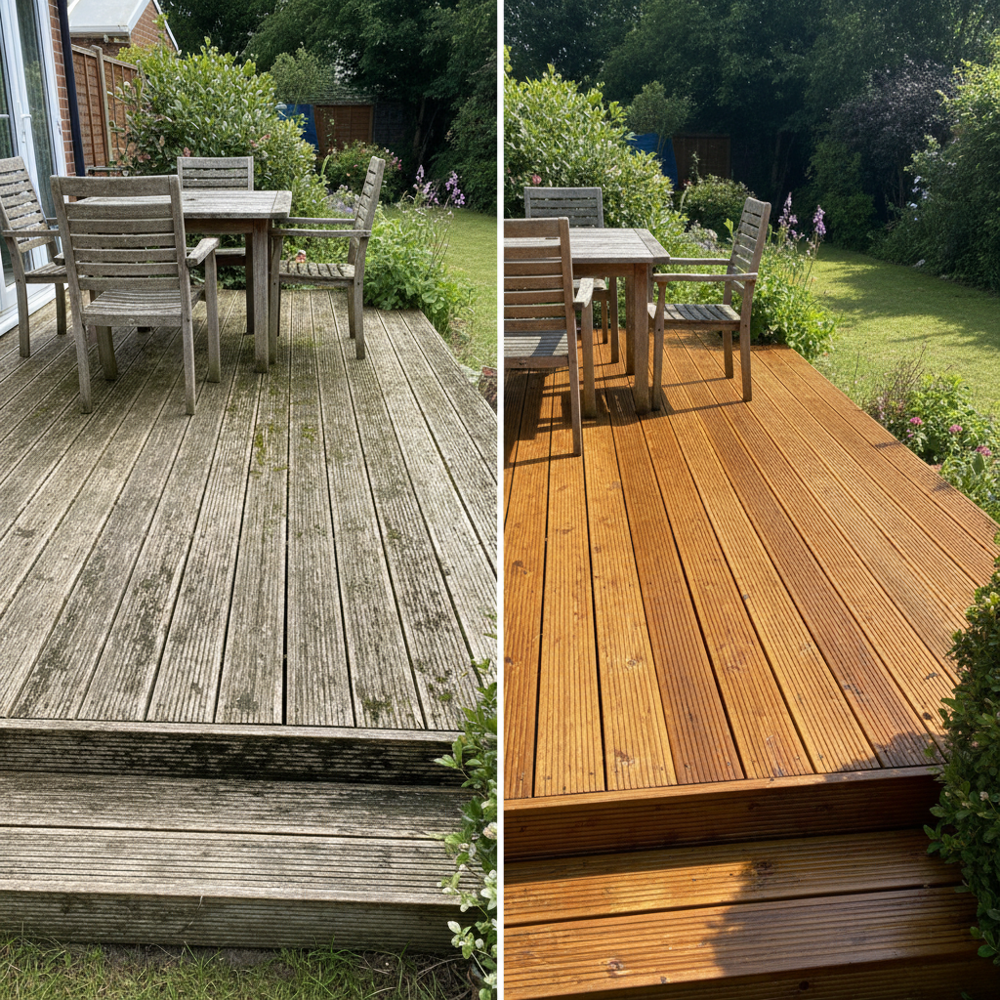

Expert Decking Restoration
Garden decking requires regular maintenance to stay safe and attractive. In Surrey's damp climate, decking quickly becomes covered in slippery green algae, moss, and dirt. Our professional decking cleaning service removes all organic growth, restores the wood's natural colour, and makes your outdoor space safe and beautiful again.
We clean both wooden decking (softwood and hardwood) and composite decking materials using appropriate pressure settings and techniques for each type.
Benefits of Professional Decking Cleaning
- Safety First - Remove dangerous slippery algae and moss
- Restore Colour - Bring back natural wood tones or composite colour
- Prevent Rot - Remove organic matter that causes wood decay
- Extend Lifespan - Proper maintenance doubles decking lifespan
- Prepare for Treatment - Clean surface ready for oil or stain application
- Increase Value - Well-maintained decking enhances property appeal
See the Difference
A typical decking transformation in Surrey
Decking Types We Clean
Softwood Decking
Most common type in UK gardens. Requires careful pressure washing to avoid damaging the softer wood. We restore the golden/honey colour and can prepare for oiling.
Hardwood Decking
Oak, Iroko, and tropical hardwoods require specialist care. We use appropriate pressure to clean without damaging the dense wood grain.
Composite Decking
Modern composite decking (plastic/wood blend) is low-maintenance but still needs periodic cleaning. We use gentle pressure to avoid surface damage.
Our Decking Cleaning Process
1. Assessment
Identify decking type and condition, check for loose boards or damage.
2. Dry Brush
Remove loose debris, leaves, and surface dirt before washing.
3. Pre-Treatment
Apply specialist deck cleaner to break down organic growth and embedded dirt.
4. Pressure Washing
Clean with appropriate pressure for your decking type, following the grain direction.
5. Drying & Optional Treatment
Allow to dry fully. Optional: apply deck oil or stain for protection (quoted separately).
Common Decking Problems
- Slippery Algae - Dangerous green coating, especially when wet
- Moss Growth - Between boards and on surface
- Grey/Black Discolouration - Wood weathering and dirt accumulation
- Mould & Mildew - Black spots on timber
- Leaf Staining - Tannin stains from fallen leaves
Service Areas
We provide decking cleaning throughout Redhill, Reigate, Horley, Dorking, Banstead, Crawley and all Surrey. View all areas
Get Your Free Decking Cleaning Quote
Every decking project is different - size, decking type, condition, and whether you need oiling or staining afterwards all affect the final price. That's why we provide free, no-obligation quotes tailored to your specific property.
With our 2-hour callback guarantee, you won't be left waiting. Submit a quote request and we'll call you within 2 hours during business hours (Mon-Sat 8am-6pm) to discuss your requirements and provide accurate pricing. Request your free quote now.